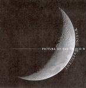

Home Artist links

Picture Of The Moon - Waxing Crescent
| Artist: | Picture Of The Moon |
| Title: | Waxing Crescent |
| Label: | self produced |
| Length(s): | 16 minutes |
| Year(s) of release: | 2004 |
| Month of review: | [04/2005] |
Line up
Sander Rhebergen - bass
Franz Klaver - rhythm guitars
Michiel Borkent - vocals, keyboards
Sjoerd Kolk - lead guitars
Rudolph Saathoff - drums
Tracks
| 1) | First Picture | 3.11
|
| 2) | Evil LiveSecure | 5.47
|
| 3) | Depressive Garden | 7.09
|
Summary
This is a new Dutch band, bringing us their first demo minicd.
They call themselves to be a progmetal band.
The music
That is not too apparent from the first track, which opens with
some nice bass guitar. Then we get something rather typically
neo-progressive, but after the bass returns for a short solo, the
rhythm guitars and speedy key solo's really take it away.
The drums are rather straightforward here, giving the song a rather
punk rock feel.
The bass also opens the second track, but here we move into a kind of
progmetal a bit sooner. The keyboardist sings quite a bit here, using various
voices, including a typical high hard rock voice (but not too often
fortunately). I would call this symphonic hardrock sooner than progmetal.
The rhtyhm guitars are supported by organ this time, giving the song
a rather gloomy, dark feel. Then we come to an interlude, which is totally
unlike the previous: a reggae groove with some jazzy piano. Then we
come back to the metal side of things. The vocals sound a bit seventies
in a way: some Black Sabbath, or more recent, some of the bands on the
Black Widow label.
Track 2 fades right into the longest song on the album. In this song, the
vocals are more melodic at first. The vocalist is not that great in the
lower regions. There are even some grunts thrown in, but as it seems
this is a different person, or is it? This is the closest we come to a pure
progmetal track.
Conclusion
For a first demo cd, this is not bad. The band has some originality in looking
back further to bands like Iron Maiden, but mainly comes off as sounding
something that would fit well on the Black Widow label. For that however
they have to mature a bit: there is the production side of things, things
sound rather gloomy, but maybe this is not accidental. The sound of the vocals
is something to pay attention to as well. First of all Bjorkent does not
sound very natural, or at ease. I guess this comes from trying to keep the notes a bit too long, because he wants to make the lyrics fit.
This hopefully comes with time. Regarding compositions, I do not have much to
complain. There are some nice themes, there is plenty of power, and a bit of humour too, if you count the interlude on track two as humour. I do.
© Jurriaan Hage